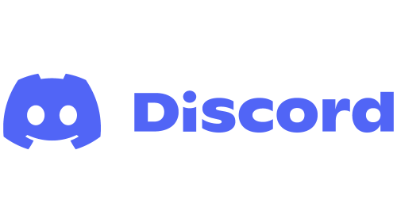

Bem vindo ao Site Oficial do The Doors,
criado por Gustavo Bonvechio.

criado por Gustavo Bonvechio.
The Doors of The True - Reino do Nelson surgiu pelos meados de Setembro de 2018, mas o servidor já existia bem antes, para ser mais exato ele foi criado no final de 2017 com um nome diferente, sendo um servidor privado do Anton Spadartsev o antigo dono do servidor, que teve o server roubado por um dos membros, sendo ele Gustavo Travaglia e atual dono do servidor.
